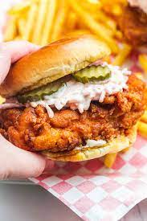

Nashville Chicken

Heat even Hattie Mae would want
Crispy, tender, juciy chicken kicked up from Nashville
Ingredients List
- Chicken Breast
- Salt
- Pepper
- Cayenne Pepper
- ButterMilk
- Butter
- Brioche Bun
- Canola Oil
- Pickles
- Coleslaw
- Flour
- Corn Flour
- Trim the fat from chicken
- Whisk together cayenne and buttermilk
- Place trimmed chicken in buttermilk blend
- Let sit it fridge for 12-24 hours
- Remove chicken from fridge 20 minutes before cook
- Put Canola oil in pot and heat
- Once oil is hot, remove chicken from buttermilk
- Whisk together flour and corn flour
- Lay chicken in flour blend and press firmly down
- Allow chicken to cook for 6-7 minutes
- Probe chicken for temperature between 165 and 175
- Place pickle on bottom bun
- Submerge chicken in butter and place on bun
- Top with cayenne pepper, coleslaw, and top bun